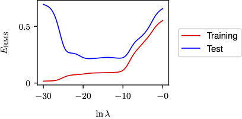

合成データを用いた機械学習の概念の解説
本ページでは合成データを用いた多項式フィッティングを例に、機械学習の基本となる以下のトピックについて解説します
- 誤差関数
- モデルがデータにどれほど適合しているかを測定するための関数
- モデルの複雑さ
- モデルの能力を表し、どの程度までデータの複雑性を捉えることができるかを定義し
- モデル選択
- 異なるモデルやハイパーパラメータの中から最適なものを選択する方法
- 正則化
- 過適合を防ぐために誤差関数にペナルティ項を加える方法
- 汎化能力の評価
- モデルが未知のデータに対してどれだけうまく機能するかを評価するための方法
合成データ
定義
合成データとは、実際のデータの特性を模倣して人工的に生成されたデータセットであり、機械学習アルゴリズムの学習目的で利用されます
ここではsin関数 \(\sin(2\pi x)\) を使って合成データを生成します
入力変数\(x\)は [0, 1] の範囲で一様に選び、\(\sin\)関数により目標変数\(t\)の値を計算します
ノイズ
実際のデータセットにはノイズが含まれるため、正規分布に基づくノイズを各データに追加します

汎化
合成データを用いた訓練を通じて、モデルが見たことのない新しいデータに対して正確な予測ができるようにするできるようにモデルを汎化することが目的です
線形モデル
目的
- 訓練セットを利用して、新たな入力変数 \(x_b\) に対する目的変数 \(b_t\) の値を予測する
多項式フィッティング
多項式フィッティングは、与えられたデータに基づいて最適な多項式関数で表現戯れる曲線を見つけることを目的とします
多項式フィッティングはこの線形モデルの１つであり、入力変数 (x) の多項式（例えば (x^2), (x^3) など）を用いて目標変数 (t) を予測します
多項式関数は以下で表現できます \[ y(x, w) = w_0 + w_1x + w_2x^2 + \ldots + w_Mx^M \ \]
- M: 多項式の次数であり、モデルの複雑さを決定する
- x: 入力変数
- y: 目的変数
- w: 多項式の係数を表すベクトルで、各係数 (w_0, w_1, …, w_M) は多項式の次数に対応
上の式では、多項式フィッティングにおける各項\(x,x^2, x^3\)が、その係数\(w_1, w_2, w_3\)に対して線形です そのため、入力変数 (x) に対する多項式の各項が非線形でも、モデル全体としてのパラメータに関しては線形モデルと見なされます
誤差関数
モデルによる出力と実データとの差を誤差と言います

誤差関数は、多項式モデルが訓練データにどれだけ適合しているかを評価するために使用される この関数は、モデルによって予測される値 (y(x_n, w)) と実際の目標値 (t_n) との間の差の二乗の合計で定義される
\[
E(w) = \frac{1}{2} \sum_{n=1}^{N} (y(x_n, w) - t_n)^2
\] この誤差関数は非負の値をとり、理想的には全ての訓練データ点に完全に一致する場合にのみゼロとなります
誤差関数が最小になるように係数 \(w\) を選ぶことで、多項式モデルがデータに最もよく適合する形を見つけることができます
結果として得られる多項式 \(y(x, w)\)は、訓練データに最適にフィットするモデルになります
モデルの複雑さ
多項式の次数
多項式の次数 M の選択は、モデル比較やモデル選択という重要な概念に関連しています
この選択がモデルの性能にどのように影響するかを理解するために、以下の点に注目します
- 次数の低い多項式:
- M = 0（定数）と M = 1（1次式）の多項式は、データに対して適合性が低く、関数 ((2x)) をうまく表現できません


- 中程度の次数の多項式:
- M = 3 の多項式は、示された例で ((2x)) 関数に最も適合しており、データと良好なバランスを示しています

- 高次の多項式:
- M = 9 とすると、トレーニングデータに対しては非常によくフィットしますが、過適合（オーバーフィッティング）の問題が生じます。この多項式は訓練データの各点を正確に通過しますが、データ点間で関数が大きく振動します
統計モデルとDeepLearning
データセットが大きくなると、より複雑なモデルを使用しても過適合の問題が軽減されます
統計学では、パラメータの信頼性の高い推定を確保するためモデルのパラメータ数よりも多くのデータ点が必要とされることが一般的です
一方ディープラーニングでは、パラメータ数が非常に多いモデルを使用しても、大量のデータが利用できる場合には、非常に高い性能を達成することが可能です
この違いは、ディープラーニングが複雑なパターンを学習する能力と、大規模なデータセットから情報を抽出する能力に由来します
モデルの汎化性能の評価
- テストセットでの評価の重要性
- 多項式の次数 \(M\) により汎化性能が変化
- テストセットで未見データのモデル挙動を観察
- 性能評価方法
- テストセット上で \(E(w^*)\) を計算
- \(E(w^*)\) はテストデータ適合度を示す
- 小さい\(E(w^*)\)は高い汎化性能を意味
- 平均二乗根誤差（RMS Error）
- 計算式: \[\text{RMS Error} = \sqrt{\frac{1}{N} \sum_{n=1}^{N} (y(x_n, w^*) - t_n)^2}\]
- N: テストデータ数
- \(y(x_n, w^*)\): 予測値, \(t_n\): 実際の目標値
- RMSエラーが小さいほど予測精度が高い
- 性能評価の視覚化
- 図1.7: \(M\)の異なる値でのトレーニングセットとテストセットの RMS エラーをグラフ化
- Mが高い場合の過適合とその影響を視覚的に表示
- M = 3が最もバランスがよい
- 図1.7: \(M\)の異なる値でのトレーニングセットとテストセットの RMS エラーをグラフ化

正則化
正則化とは
- モデルのパラメータ数を単に制限する代わりに、問題の複雑さに合わせてモデルの複雑さを調整する方法です
- 正則化は、誤差関数にペナルティ項を追加することで、係数の大きさを抑制し、過適合を防ぎます
正則化の方法
- 誤差関数にペナルティ項を追加
- ペナルティ項は、全ての係数の二乗の和として定義されることが多いです
- 正則化された誤差関数は次のように表されます \[E_{\text{reg}}(w) = \sum_{n=1}^{N} (y(x_n, w) - t_n)^2 + \lambda \sum_{j=0}^{M} w_j^2\]
- ここで $$ は正則化の強さを調整するパラメータ
正則化の効果
- 高次多項式の過適合の抑制
- 正則化を利用することで、\(M = 9\)のような高次多項式でも過適合が抑えられるようになります
- \(\lambda\) の値を調整することで、モデルの適合度と汎化能力のバランスを取ります
正則化パラメータの影響
- $$の異なる値によるフィッティングの例
- \(\ln\lambda = -18\)で適切なフィッティングが得られ、過適合が抑制されています
- \(\ln\lambda = 0\)の場合は、正則化が強すぎるためモデルの係数が小さく抑えられ、データの特徴を捉えられていません
- \(\lambda = -\infty\) (正則化なし)の場合はフィッティングが不十分で、過適合が目立ちます
- \(\ln\lambda = -18\)で適切なフィッティングが得られ、過適合が抑制されています


正則化による汎化性能の可視化
- 訓練データとテストデータにおける平均二乗根誤差（RMSエラー）を \(\ln\lambda\)に対してプロット
- 以下の図はRMSエラーの \(\ln(\lambda)\)に対するグラフで、正則化の強さが汎化エラーに与える影響を示します
- 
- 正則化が強いほど汎化エラーが低減しますが、強すぎるとデータの適合度が損なわれます
モデル選択
モデル選択の重要性
- モデル選択は、モデルの過適合を防ぎつつ最適な汎化能力を得るために必要です
- ハイパーパラメータには多項式の次数 \(M\) や正則化パラメータ \(\lambda\) が含まれます
ハイパーパラメータの調整
- \(\lambda\) や \(M\) を最適化するためには、訓練データとは別に検証データセットを用いることが一般的です。
- 適切な \(\lambda\) や \(M\) の値を見つけるためには、検証セット上でのエラーが最も低いモデルを選択します
検証セットとクロスバリデーション
- データを訓練セットと検証セットに分け、検証セットを使用してモデルの汎化能力を評価します
- クロスバリデーションは、データを複数のサブセットに分け、それぞれのサブセットでモデルを訓練し、残りのサブセットでテストすることで、モデルの堅牢性を確認します
クロスバリデーションの手法
- S-foldクロスバリデーションでは、データを \(S\) グループに分け、\(S-1\) グループを使用して訓練し、残った1グループで性能を評価します。このプロセスを繰り返して、平均的なモデル性能を得ます

ハイパーパラメータの課題
- 大規模なモデルやデータセットでは、ハイパーパラメータの選択肢が多く、最適な設定を見つけるのが困難です
- モデルの訓練が計算コストが高い場合、クロスバリデーションを含む多くの訓練コストが必要になることがあります
参考文献
- Bishop, C. M., & Bishop, H. (2024). Deep Learning: Foundations and Concepts. Springer